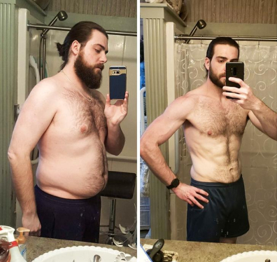

BURN MT - для тех, кому не нужны лишние килограммы

Средств для похудения сегодня - глаза разбегаются. Это и пилюли, и порошки, и капли, биодобавки и сжигатели жира - на чем остановиться? Как выбрать препарат, который не только уберет лишние килограммы, но и ненавредит организму?
Новинка нового поколения
Представляем новый препарат BURN MT, который отлично сжигает жиры и поддерживает организм в нужном тонусе. Недавно появившийся на рынке средств для похудения, BURN MT уже уверенно заявил о себе.
Среди аналогичных средств для похудения BURN MT выгодно отличается рядом преимуществ:
- не имеет побочных эффектов;
- демонстрирует отличные результаты;
- является продуктом нового уровня.
При разработке BURN MT ученые обратили внимание, что ряд компонентов при сочетании правильных пропорций могут не только активно сжигать жиры, но и способствовать профилактике накопления лишней жировой массы в проблемных местах. Это качество BURN MT было испытано, и результаты оказались весьма впечатляющими.
Вот что рассказывает о новом препарате Игорь Никонтов, спортивный врач-диетолог:
«BURN MT является прекрасным средством для тех, кто желает держать свой организм в
отличной форме. Это незаменимый
помощник для желающих похудеть. BURN MT - средство нового поколения, которое не вызывает привыкания,
оказывает
общеукрепляющее действие на организм и мягко сжигает жиры.
Препараты быстрого действия имеют такие побочные эффекты, как быстрый возврат веса после отказа от их
приема. Средство
BURN MT, благодаря современной формуле, действует на организм медленно, мягко, но надежно. После курса
приема данного
препарата вес не возвращается».
Уникальная формула

Аминокислоты и различные добавки подобраны в BURN MT в таких пропорциях, что препарат оказывает влияние на весь цикл жизнедеятельности организма:
- способствует более активному обмену веществ;
- улучает метаболизм;
- обогащает кровеносную систему необходимыми микроэлементами и питательными веществами;
- активизирует лимфодренаж.
Все эти уникальные качества в комплексе запускают естественный процесс избавления от лишнего веса. Важно: Благодаря своим микробиологическим свойствам, BURN MT проникает в самые отдаленные места скопления жира и способствует его расщеплению.
Привыкания - нет
Большинство желающих похудеть опасаются принимать лекарственные и биодобавки по одной причине: боятся к
ним привыкнуть и
подсадить себя на пожизненное употребление.
Препарат BURN MT не содержит никаких стимуляторов, а привыкания к нему - нет.
Отсутствие в BURN MT ароматизаторов, красителей, подсластителей позволяет принимать это средство людям с
имеющимися
хроническими заболеваниями: сахарным диабетом, гипертонией, аллергическими реакциями.
Новый препарат отлично зарекомендовал себя на клинических испытаниях. Добровольцы, которые принимали BURN
MT в тестовом
режиме, отмечали не только быстрый уход веса, но и после приема данного средства лишние килограммы не
возвращались. При
этом у испытуемых не возникало побочных эффектов, случаев аллергии или непереносимости.
Препарат BURN MT является средством для похудения нового поколения, эффективен и безопасен.
Кому рекомендован BURN MT
Данный препарат прошел все необходимые клинические тестирования и испытания, имеет сертификаты качества, предъявляемые законодательными нормами. Разработчики BURN MT отказались от использования в препарате стимулирующих веществ, что не вызывает привыкания и зависимости. Кроме того, отсутствие стимуляторов позволяет употреблять данное средство на ночь - именно в этот период благодаря особой молекулярной формуле BURN MT действует наиболее активно. Для удобства употребления BURN MT изготовлен в виде спортивного питания. Для определенной задачи, которая стоит перед человеком, дозировка и длительность приема BURN MT могут быть разными и выбираются в зависимости от особенностей организма.
BURN MT рекомендован:
- спортсменам, которые следят за свои весом;
- посетителям финтесс-залов - в комбинации с физическими нагрузками BURN MT дает прекрасный результат;
- всем, кто следит за своим весом в качестве добавки в питание; при различных диетах.
Побочных эффектов - нет
Уникальность BURN MT в том, что он не имеет побочных эффектов. Препарат:
- не вызывает чувства сонливости и усталости;
- гипоаллергенный, не провоцирует раздражение кожи и высыпания;
- отлично регулирует стул, не раздражает кишечник;
- можно употреблять с любым видом пищи;
- не требует отказа от алкоголя.
Подробная инструкция

Как применять BURN MT, подробно расскажет инструкция. Дозировка зависит:
1. От веса человека.
2. Степени его физической нагрузки
3. Образа жизни и рациона питания
4. Наличия или отсутствия хронических заболеваний.
Препарат можно принимать экспресс-методом, когда нужно похудеть за быстрое время, или растянуть его прием
на более
длительный период.
Для каждого случая схема приема подробно расписана.
Новый помощник для тех, кто на диете
Выдержать даже самую щадящую диету под силу не каждому, а BURN MT избавляет от этой необходимости. Зачем
ограничивать
себя в еде и отказываться от любимых блюд? BURN MT позволяет не изменять свой привычный образ жизни.
Но будьте уверены - уже через неделю после приема этого чудо-препарата вы заметите, что ваши порции стали
меньше. Ведь
BURN MT содержит нужные для организма полезные микроэлементы и аминокислоты и насыщает организм.
Важно: Процесс похудения достаточно сложный. Здесь главное - не вывести из строя
жизненно важные органы, а затем не
вернуть себе прежние килограммы. И препарат BURN MT отлично справляется с этой целью: вреда для организма
нет, а
полученный результат сохраниться на долгие годы.
Уже готовы попробовать? Жми сюда - здесь все подробности о химическом составе BURN MT, схеме применения,
рекомендациях и
особенностях.
Вес не возвращается
А вот что рассказывают реальные пользователи, те, кто прошел полный курс применения BURN MT.
Игнат Степанов, руководитель школы бальных танцев, на протяжении трех месяцев принимал BURN MT:
«У меня был вынужденный полугодовой перерыв в работе, за это время я набрал лишний вес, а прийти в нужную форму необходимо было быстро. Знакомый порекомендовал мне средство BURN MT. Я изучил инструкцию, понял, что никаких побочных эффектов не ожидается, и решил попробовать. Уже через неделю я не только сбросил пару килограмм, но и заметил, что стал более энергичным. Но важно не то, что вес быстро уходит - он не возвращается. Я уже не принимаю BURN MT почти четыре месяца, а вес держится на том уровне, которого я хотел достигнуть. Хочу также отметить, что никаких побочных эффектов - чувства тяжести, жажды, усталости - во время приема препарата отмечено не было. Наоборот, я испытывал прилив сил, улучшение настроения, комфорт. И что немаловажно - я сбросил около 12 килограмм, а кожа при этом совсем не обвисла и не стала дряблой. Важно: во время применения BURN MT можно не менять свой привычный рациона питания. Естественно, что большего эффекта рекомендовано отказаться от жирной пищи, ограничить себя в сладостях и сдобе».
Никаких сложностей с BURN MT Блогер Наталья Исакова после применение этого препарата оставила такой отзыв:

«Я тоже страдала от того, что «внезапно» талия стала шире, руки рыхлее, а бедра «вдруг» округлились. Да еще и любимые джинсы отказались застегиваться))) Перерыла массу литературы и вдруг наткнулась на препарат BURN MT. Прочитала про него все, что смогла нарыть в Интернете, и решила испробовать на себе. Основным фактором в пользу этого решения стала информация, что это средство практически не имеет побочек. Итак, первый день приема BURN MT - на вкус приятный такой порошочек, никаких ароматизаторов и подсластителей. Ждала, как поведет себя мой желудок, не будет ли расстройства. Оказалось, что опасения напрасны - за все время приема BURN MT не только не возникло проблем, но и нормализовался стул. Мне показалось, что как только я приняла первую дозу BURN MT, жировые клетки начали самоуничтожаться. Конечно, понимаю, что это чисто психологический эффект. А если говорить объективно, то за первую неделю я сбросила 2,5 кг. Мало - скажут некоторые! Нет, немало! Не верьте тем средствам, которые обещают вам за неделю минус 3 и больше килограмм. Это очень, очень вредно для здоровья. А вот BURN MT - мягкий, нежный, но надежный препарат. Он сжигает жиры не спеша - но зато потом они не возвращаются, когда вы перестаете принимать это средство».
Комментарии
ОТПРАВИТЬ

Рената, 42 года
Всю жизнь мучилась с лишним весом не могла похудеть ни одним способом, а потом
оказалось, что у меня именно так проблема, которая описана в статье. Средство реально помогает,
после курса похудела на 12 кг!

Александра, 36 лет
Точно! Сейчас это открытие будет в каждой новости. Ну в этот раз хотя бы реально ценный материал, а не очередная ерунда.

Марина, 31 год
А мне кажется, что это и есть очередной обман… ничего не понятно…

Алексис, 31 год
А вам и не нужно ничего понимать. Достаточно знать только одно: BURN MT реально работает. Я вот проверила на себе и
теперь не знаю проблем, а раньше еле передвигалась.

Инна, 47 лет
Летом боялась показаться в открытой одежде, потому что стеснялась своей фигуры. После приема курса BURN MT уже не
вспоминаю об этом. Вы только посмотрите, какой результат. Я стала на 4 размера меньше — и все это без каких-либо диет и
тренировок.
Валентина, 47 лет
Поддерживать вес после 40 все сложнее, только позволишь себе лишнюю булку, так все — лишний килограмм откладывается на
бедрах. Оказалось, беда как раз в инсулинорезистентности. Пропила курс BURN MT — теперь вес у меня такой же, как в 30 лет!

Мария, 29 лет
До приема курса BURN MT худела на протяжении 10 лет. Безрезультатно! Я даже пыталась полюбить себя такой, какая я есть,
но это полумеры. Я хотела носить 44 размер. И моя мечта сбылась: теперь я вешу 52 килограмма. :)

Алена, 32 года
С помощью BURN MT вернула себе форму, которая была до родов! Вес ушел быстро и без проблем.

Альба, 55 лет
Здравствуйте! Недавно купила BURN MT, и всего за неделю я уже похудела на 5 кг!! В моем возрасте этого очень нелегко
достигнуть, и я очень рада результатам. Продолжаю худеть с удовольствием!
Лукреция, 30 лет
Очень интересная статья! Теперь, когда я знаю, как действует BURN MT, не страшно за свое здоровье, обязательно закажу.
Риккарда, 29 лет
Привет всем! Раньше я весила 80 килограмм, а теперь мой вес 55 кг, и это удалось мне только с BURN MT! Результат
держится уже месяц, без колебаний в весе. Это действительно очень хорошее средство!

Рачель, 41 год
Я курила 10 лет. Как только мне удалось преодолеть никотиновую зависимость, я начала толстеть ☹ BURN MT мне купила
сестра, она сама похудела с этими капсулами после беременности. На самом деле, аппетит уменьшается уже после первой
капсулы. Я вернулась к своему идеальному весу, и при этом я не только не навредила себе, но и у меня появилось много
энергии в течение дня!
Рената, 42 года
Всю жизнь мучилась с лишним весом не могла похудеть ни одним способом, а потом оказалось, что у меня именно так проблема, которая описана в статье. Средство реально помогает, после курса похудела на 12 кг!
Александра, 36 лет
Точно! Сейчас это открытие будет в каждой новости. Ну в этот раз хотя бы реально ценный материал, а не очередная ерунда.
Марина, 31 год
А мне кажется, что это и есть очередной обман… ничего не понятно…
Алексис, 31 год
А вам и не нужно ничего понимать. Достаточно знать только одно: BURN MT реально работает. Я вот проверила на себе и теперь не знаю проблем, а раньше еле передвигалась.
Инна, 47 лет
Летом боялась показаться в открытой одежде, потому что стеснялась своей фигуры. После приема курса BURN MT уже не вспоминаю об этом. Вы только посмотрите, какой результат. Я стала на 4 размера меньше — и все это без каких-либо диет и тренировок.
Валентина, 47 лет
Поддерживать вес после 40 все сложнее, только позволишь себе лишнюю булку, так все — лишний килограмм откладывается на бедрах. Оказалось, беда как раз в инсулинорезистентности. Пропила курс BURN MT — теперь вес у меня такой же, как в 30 лет!
Мария, 29 лет
До приема курса BURN MT худела на протяжении 10 лет. Безрезультатно! Я даже пыталась полюбить себя такой, какая я есть, но это полумеры. Я хотела носить 44 размер. И моя мечта сбылась: теперь я вешу 52 килограмма. :)
Алена, 32 года
С помощью BURN MT вернула себе форму, которая была до родов! Вес ушел быстро и без проблем.
Альба, 55 лет
Здравствуйте! Недавно купила BURN MT, и всего за неделю я уже похудела на 5 кг!! В моем возрасте этого очень нелегко достигнуть, и я очень рада результатам. Продолжаю худеть с удовольствием!
Лукреция, 30 лет
Очень интересная статья! Теперь, когда я знаю, как действует BURN MT, не страшно за свое здоровье, обязательно закажу.
Риккарда, 29 лет
Привет всем! Раньше я весила 80 килограмм, а теперь мой вес 55 кг, и это удалось мне только с BURN MT! Результат держится уже месяц, без колебаний в весе. Это действительно очень хорошее средство!
Рачель, 41 год
Я курила 10 лет. Как только мне удалось преодолеть никотиновую зависимость, я начала толстеть ☹ BURN MT мне купила сестра, она сама похудела с этими капсулами после беременности. На самом деле, аппетит уменьшается уже после первой капсулы. Я вернулась к своему идеальному весу, и при этом я не только не навредила себе, но и у меня появилось много энергии в течение дня!